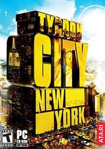

Tycoon City: New York
Tycoon City: New York
Detalles
|  | |
| Tiempo de juego | No Jugado |
| Última actividad | Nunca |
| Añadido | 23/07/2021 17:30:19 |
| Modificado | Nunca |
| Estado de finalización | Not Played |
| Librería | Steam |
| Fuente | Steam |
| Plataforma | PC (Windows) |
| Fecha de lanzamiento | 12/03/2008 |
| Puntuación de la Comunidad | 40 |
| Puntuación de la Crítica | 67 |
| Puntuación de usuario | |
| Género | Simulation |
| Desarrollador | Deep Red Games |
| Editor | Retroism |
| Característica | Single Player |
| Enlaces | Community Hub Discussions Guides News Store Page PCGamingWiki |
| Tag | |
Descripción
Special Offer
Officially Licensed Tycoon City: New York T-Shirts are available on Amazon! .jpg?t=1486757370)
About the Game
Here's your chance to make it big in the Big Apple... New York City, the city that never sleeps! Go for broke building your own Manhattan empire, creating and customizing over 100 types of major businesses: run a hot nightclub, oversee a media conglomerate, open a lucrative Broadway theater - the choices are endless. As your success grows, so will your reputation - you'll be the toast of Manhattan, with the city at your feet.With world-renowned landmarks, true-to-life neighborhoods, and spectacular New York City events, you're constantly in the thick of the action, becoming a major mogul in America's most exciting metropolis. High-profile industries, real-world brands, and a bustling 24-hour city give every player the chance to make it big.
- Over 100 Manhattan business opportunities: run a nightclub, host a Central Park concert, own the city's hottest new restaurant, create cutting-edge fashion businesses, organize the Thanksgiving Day Parade, and build skyscrapers as part of your dream New York City skyline.
- Upgrade businesses with hundreds of improvements - increase the beauty, capacity and appeal of storefronts to attract greater crowds and drive profits.
- Create and customize original businesses with successful chain locations across the city.
- Place buildings anywhere to create your own version of New York City.
- Experience the reactions of thousands of New Yorkers, each with individual traits and tastes.
- Develop world-famous Manhattan neighborhoods, each with its own authentic cultural flavor.